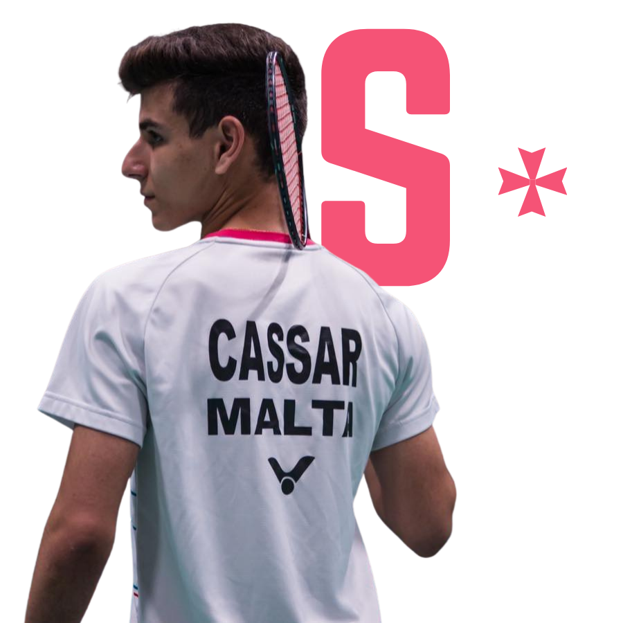

Positioning
Clarify your story, values, sporting goals, audience, and the identity that should connect every channel.
Player social media management
Your performance tells one part of the story. We shape the digital presence that helps supporters, clubs, media, and potential sponsors see the person and ambition behind it.
Build my presence
Built around the athlete
Stay focused on training and competition while your digital channels tell a clear, professional, and authentic story.
We establish your voice and visual direction, plan relevant content, maintain consistency, and present your progress in a way audiences and commercial partners can understand.
What we manage
Clarify your story, values, sporting goals, audience, and the identity that should connect every channel.
Plan and create training, competition, milestone, behind-the-scenes, and partner content.
Build meaningful consistency and engagement with supporters around your sporting journey.
Present a credible, sponsor-ready presence and integrate partnerships naturally into your story.
Featured athlete
A dedicated digital home for a Badminton Malta athlete.
Sam’s athlete platform brings his sporting journey, identity, media presence, and sponsorship story together in one focused experience.
Visit Sam’s websiteYour story, professionally managed